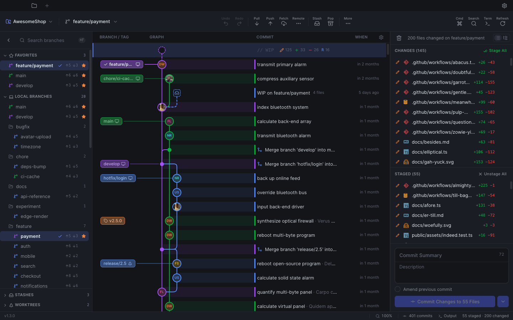
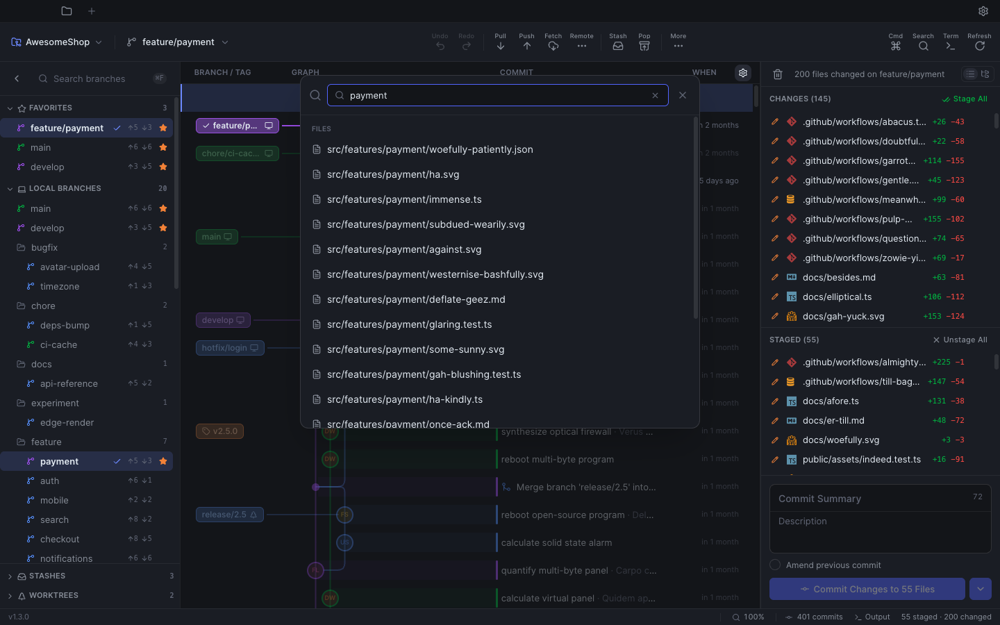

Git Light est-il vraiment gratuit ?
Oui. Licence MIT, pas d'offre payante, pas d'essai, pas de publicité et aucune fonction verrouillée. Toutes les fonctionnalités de cette page sont disponibles dans la version gratuite.
Client Git de bureau gratuit et open source pour macOS, Windows et Linux. Parcourez l'historique sur un graphe rapide, gérez vos branches, indexez vos modifications et exécutez de vraies commandes Git sur vos dépôts locaux — sans compte.

Visualiseur de diffs, recherche, palette de commandes et apparence — les mêmes captures que le README.




Les fonctionnalités Git essentielles à parité — gratuit, open source et léger.
| Git Light | GitKraken | GitHub Desktop | Sourcetree | |
|---|---|---|---|---|
| Gratuit + open source (MIT) | ✅ | ❌ | ✅* | ✅ gratuit, ❌ fermé |
| Sans compte | ✅ | ❌ | ✅ | ❌ |
| Graphe de commits + branches + staging | ✅ | ✅ | ✅ | ✅ |
| Merge / rebase / cherry-pick | ✅ | ✅ | partiel | ✅ |
| Staging par bloc + éditeur de conflits | ✅ | ✅ | partiel | ✅ |
| Rebase interactif | ✅ | ✅ | ❌ | ✅ |
| Annuler / rétablir + stash | ✅ | ✅ | partiel | partiel |
| Diffs d'images + blame + historique du fichier | ✅ | ✅ | partiel | partiel |
| Onglets multi-dépôts | ✅ | ✅ | ❌ | ✅ |
| Palette de commandes + raccourcis personnalisés | ✅ | partiel | ❌ | ❌ |
| macOS / Windows / Linux | ✅ | ✅ | ✅ / ✅ / ❌** | ✅ / ✅ / ❌ |
| Léger, hors ligne d'abord | ✅ | ❌ lourd | ✅ | ❌ lourd |
* GitHub Desktop est open source mais centré sur GitHub. ** Pas de version Linux officielle.
Shell de bureau Tauri 2, moteur de rendu Vue 3 et une couche de commandes Git typée.
Application de bureau gratuite pour macOS, Windows et Linux — open source, sans compte.
curl -fsSL https://raw.githubusercontent.com/ftuyama/git-light/main/scripts/install.sh | sh
Les navigateurs ajoutent un attribut de quarantaine aux fichiers téléchargés, que macOS bloque pour les apps sans Apple Developer ID. Votre téléchargement n'a rien de défectueux :
Solution la plus simple : utilisez plutôt la commande d'installation en une ligne — ses téléchargements ignorent la quarantaine. Si vous avez déjà installé depuis le .dmg, exécutez une fois dans le Terminal :
codesign --force --deep --sign - "/Applications/Git Light.app"
xattr -dr com.apple.quarantine "/Applications/Git Light.app"chmod +x *.AppImage et lancez-le. Deb : installez avec sudo apt install ./git-light_*.deb.Les versions précédentes, checksums et installateurs par plateforme (.dmg, .exe, .msi, .AppImage, .deb, .rpm) se trouvent sur la page Releases de GitHub.
# Cloner et lancer git clone https://github.com/ftuyama/git-light.git cd git-light npm install npm run dev
Réponses rapides sur Git Light.
Oui. Licence MIT, pas d'offre payante, pas d'essai, pas de publicité et aucune fonction verrouillée. Toutes les fonctionnalités de cette page sont disponibles dans la version gratuite.
Non. Pas de connexion, pas de clé de licence et pas de télémétrie. Git Light fonctionne avec n'importe quel dépôt sur le disque et avec n'importe quel distant déjà configuré dans votre Git, en HTTPS ou SSH.
Oui. Parcourir l'historique, le graphe de commits, le staging, les diffs, les commits, les branches, les fusions, les rebases et les stashes sont des opérations locales. Seuls fetch, pull, push et clone nécessitent le réseau.
Non — il utilise le binaire git de votre système, donc votre configuration, vos alias, votre credential helper, vos clés SSH, vos hooks et le comportement de .gitignore s'appliquent sans changement.
Oui. Ouvrez n'importe quel dossier contenant un répertoire .git (ou clonez/initialisez-en un nouveau). Git Light n'ajoute aucun index propriétaire et n'écrit aucun fichier supplémentaire dans votre dépôt.
Apple Silicon (arm64) est entièrement pris en charge. Les Mac Intel ne sont pas pris en charge par les versions actuelles — le pipeline de release ne produit qu'un .dmg aarch64. Des versions Windows x64 et Linux x86_64 sont également disponibles.
C'est Gatekeeper qui réagit à une signature ad hoc, pas un téléchargement défectueux — voir la note d'installation macOS.
Anglais, portugais (Brésil), chinois simplifié, espagnol, français, allemand et japonais. L'interface suit la langue du système et peut être changée dans les préférences. Ce site est disponible dans les mêmes sept langues.